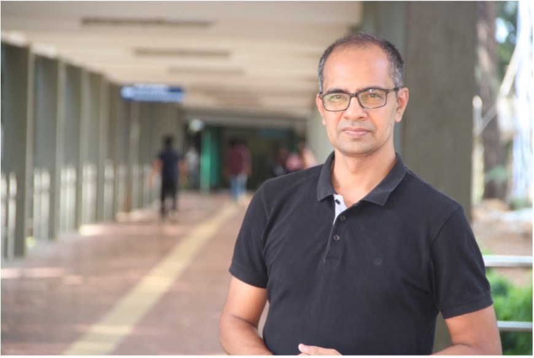

Next seminarNext seminar
Sankalp Pratap
Chair Professor of Entrepreneurship · Desai Sethi School of Entrepreneurship, IIT Bombay
‘This isn't like working in a bank!’ A Practice-Based View of Entrepreneurial Support in Technologically Complex Environments
- Date
- Time
- To be confirmed
- Venue
- IIM Bangalore
About the speaker
Sankalp Pratap is Chair Professor of Entrepreneurship at the Desai Sethi School of Entrepreneurship, IIT Bombay. He received his PhD and MBA from IIM Calcutta and a BTech from Marine Engineering & Research Institute, Kolkata. Before entering academia, he spent over ten years at NOL Singapore, Infosys Technologies, and the Tata Group, working across strategy, operations, marketing, management consulting, and talent management.
He has served as research faculty at IIM Trichy, IIT Jodhpur, and IIT Bombay. His research examines entrepreneurship education, university-based entrepreneurship ecosystems, and entrepreneurship support organizations, with work published in Strategic Management Journal, Organization, and Technovation, among others.
In 2020, he co-founded Hamari Laado with his doctoral student Premlata Poonia to support learning and pathways to micro-entrepreneurship for girls from low-income rural families. He also served as Principal Investigator of Bharat Innovates 2026, an initiative supporting the Indian education ecosystem. Outside academia, he writes stories inspired by everyday life and his travels.